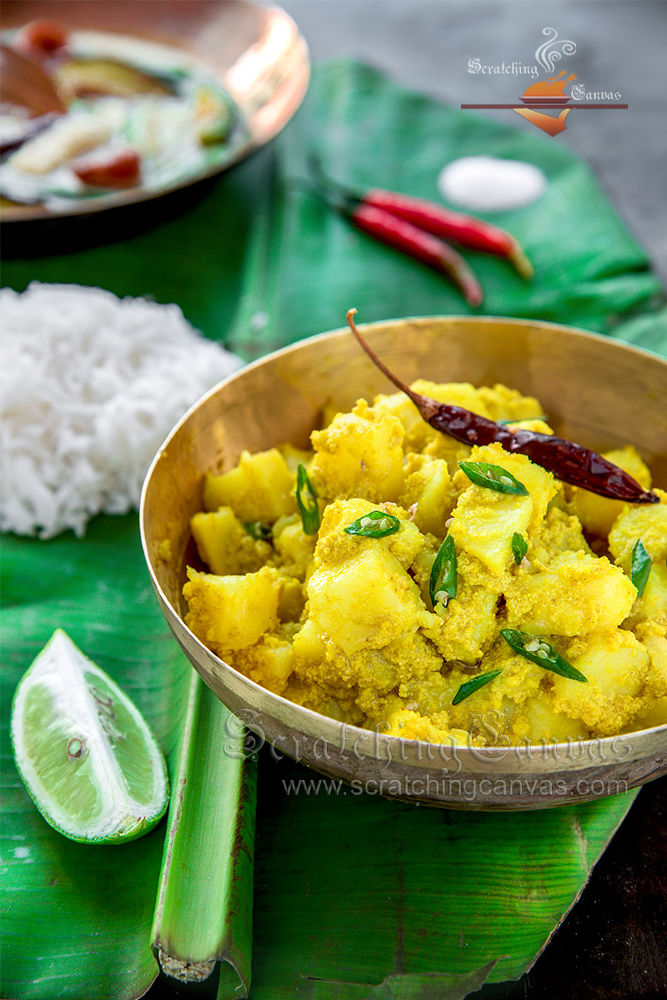

ALU POSTO

Description:
Aloo Posto is a classic Bengali dish where potatoes are cooked with poppy seed paste. If there is any dish that screams comfort food in Bengali cuisine then it has to be this aloo posto. It is a vegan, gluten-free vegetarian, dairy-free, recipe. It comes together in 15 minutes and is often served with the side of rice and Dal.
Ingredients:
- Potatoes
- Poppy seed
- Mustard Oil
- Salt
- Red Chili Powder
- Turmeric Powder
Steps:
- Soak the poppy seeds in plain water for 20-30 minutes and then make a thick paste.
- Add 2-3 green chillies. Now, add a little salt to the paste. Take care that the paste is thick in consistency.
- Chop the potatoes in small cubes and then wash them.
- Now heat the oil in a wok and add onion seeds.
- Then add the potatoes in the oil and start frying on medium flame for 3-4 minutes.
- Now add a little salt, turmeric, green chillies and mix.
- Add 1 cup of water and cover the pan.
- Check in between and once half done, add the posto/ poppy seeds paste and cook till potatoes soften completely.
- Carefully mix them once again.
- Cook till the water is absorbed completely.
- Serve hot with steamed rice.
Go to Top of this Page
Go to Home Page